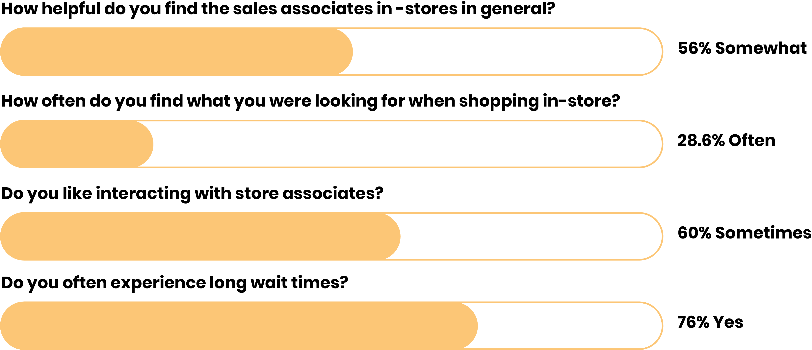
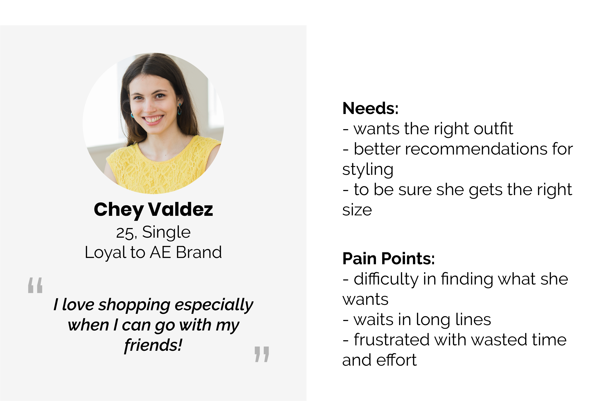

1 of 3 Traditional clothing retail is in the midst of a transformation. We were tasked to create an entirely new way for clothes to enter people’s lives, co-creating value between AEO and their customers.
We already know AE is a leader in selling jeans, why not make them a leader in selling accessories?
Research
Ideation
Design Conceptualization
Story Boarding
Speed Dating
Janice Chen, Michael Liu, Chris Reyes, Qian Hui Sun, Nicole Wan
3 months
Faculty: Skip Shelly and John Zimmerman
How can we use customer downtime to enhance in-store shopping as a social experience?
Imagine you are shopping with a friend, you bring them along to give you advice on the clothes you pick. Most times, you’ll go into the fitting room, and come out and ask for their opinion.
With AE CO-LAB, located in the fitting room, you will scan your clothes before going into the fitting room- and your outfit will appear on the touchscreen. Your friend is then able to interact with it, choosing accessories that will match the outfit and make their recommendations for you while they wait.
Quotes that stood out after we conducted 12 interviews to get a sense of both associate and customer experience:
“We only have 3 fitting rooms in the store, so when some customers are waiting in line they have to wait a long time.”
“If a customer asks for a particular size, it’s a hassle for me to look it up and try to find it in the store.”
“I love shopping, but I hate going alone. I usually bring one or two friends with me to get some style advice.”
The interviews were synthesised and we discovered that regardless of where people shopped, it all came down to four main insights:
People are usually prompted to buy accessories at the end of their shopping, usually when they are checking out.
People go to family and friends for advice. They will make purchases based on the recommendations that they get.
Customers will only interact with a associates if they need to find something. There is a disconnect between their interactions.
Furthermore, we conducted a survey to see if there were any commonalities between a variety of shopper’s experiences.
We also conducted secondary research, analyzing social, economic, and technological trends in the industry.
Gen Z’s purchase decisions become more influenced by media like Instagram and peers around them.
There is declining foot traffic in malls, yet there is a growth in brick and mortar stores.
There is an increase in digitization of in store shopping experiences.
There is a lot of customer data, but many companies do not know what to do with it.
Through research and synthesis, we found there to be a few solutions to help AE build a stronger service.
Utilize data to better assist with styling.
Provide a personalized service to help with style and fit.
Use a system that makes better styling recommendations
We created a persona based on AEO's demographic and identified her needs and pain points:
Keeping these models in mind, we began our design ideation phase. From our research and findings, we did a brainstorm session to get our ideas up and running.
We wanted to answer the question:
"How can we use customer downtime to enhance in-store shopping as a social experience?"

After mapping our ideas, we narrowed out of 30 ideas to storyboard 5 ideas:
Since associates were deemed to lack credibility, we determined that self styling was the answer. I speed dated one more storyboard to validate this.
A lot of people loved this idea, but wanted to know if it could include multiple people- family & friends.
It is ultimately AEO’s goal to sell more and increase revenue. They are a leader in selling jeans, so we thought why can’t they be a leader in selling accessories?
According to Statistical Portal, revenue in the Accessories market amounts to US$57,909m in 2018. The market is expected to still grow annually by 1.6% (CAGR 2018-2021). Currently, AEO has been a market lead in selling jeans, but perhaps not doing as well in selling accessories and styling, and there is a huge, untapped resource, which is the social shopper. Therefore, our vision is to facilitate those co-shoppers as a styling guide for their friends.
Let loyal AEO customers bring their friends and family into the stores, convert them into loyal customers as well
1. Try new things without feeling like you are being sold to by an associate
2. Explore without limitation
3. Get inspiration from others like you on the display
1. More products like accessories sold means more revenue for AEO
2. Help Sales Associates meet their sale quota
We had designers, managers, and associates from AEO come hear what we had created. We got an overwhelming number of positive feedback and appreciation for our idea! To take this to the next step, the AE CO-LAB could become integrated with their mobile app or even be in other locations in the store.
Our group was constantly switching back and forth several ideas. It was a lot of digging deep into what it actually means to co-create value for AEO and their customers. We went through many iterations and ideas, some that even started as a joke and flourished into our design!